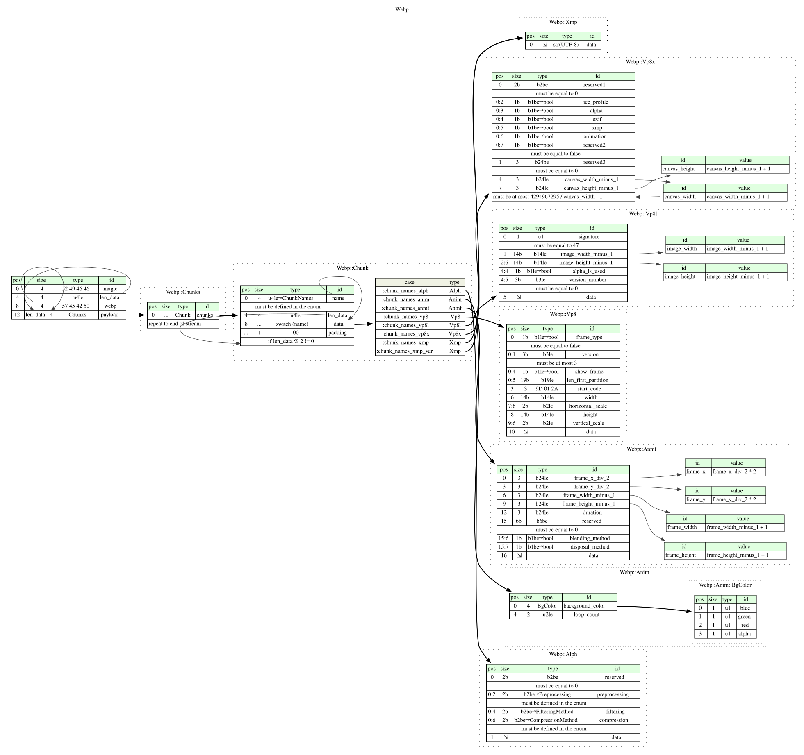

This page hosts a formal specification of WebP using Kaitai Struct. This specification can be automatically translated into a variety of programming languages to get a parsing library.

meta:
id: webp
title: WebP
file-extension: webp
xref:
justsolve: WebP
loc: fdd000577
mime: image/webp
pronom:
- fmt/566 # WebP Lossy ('VP8 ')
- fmt/567 # WebP Lossless ('VP8L')
- fmt/568 # WebP Extended ('VP8X')
rfc: 9649
wikidata: Q62617958
license: CC0-1.0
ks-version: '0.11'
encoding: UTF-8
endian: le
bit-endian: be
doc-ref: https://developers.google.com/speed/webp/docs/riff_container
seq:
- id: magic
contents: "RIFF"
- id: len_data
type: u4
- id: webp
contents: "WEBP"
- id: payload
size: len_data - webp._sizeof
type: chunks
types:
chunks:
seq:
- id: chunks
type: chunk
repeat: eos
chunk:
-webide-representation: '{name}'
seq:
- id: name
type: u4
enum: chunk_names
valid:
in-enum: true
- id: len_data
type: u4
- id: data
size: len_data
type:
switch-on: name
cases:
chunk_names::alph: alph
chunk_names::anim: anim
chunk_names::anmf: anmf
chunk_names::vp8: vp8
chunk_names::vp8l: vp8l
chunk_names::vp8x: vp8x
chunk_names::xmp: xmp
chunk_names::xmp_var: xmp
- id: padding
contents: [0x00]
if: len_data % 2 != 0
vp8:
meta:
bit-endian: le
doc-ref: https://www.rfc-editor.org/rfc/rfc6386#section-9.1
seq:
- id: frame_type
type: b1
valid: false # the VP8 chunk always holds a key frame
- id: version
type: b3
valid:
# See https://github.com/webmproject/libwebp/blob/4fa21912338357f89e4fd51cf2368325b59e9bd9/src/dec/vp8_dec.c#L305-L308 (Git tag "v1.6.0")
max: 3 # only versions 0-3 are defined
- id: show_frame
type: b1
- id: len_first_partition
type: b19
- id: start_code
contents: [0x9d, 0x01, 0x2a]
- id: width
type: b14
- id: horizontal_scale
type: b2
- id: height
type: b14
- id: vertical_scale
type: b2
- id: data
size-eos: true
vp8l:
meta:
bit-endian: le
doc-ref: https://developers.google.com/speed/webp/docs/webp_lossless_bitstream_specification
seq:
- id: signature
type: u1
valid: 0x2f
- id: image_width_minus_1
type: b14
- id: image_height_minus_1
type: b14
- id: alpha_is_used
type: b1
doc: |
A hint only - it should not impact decoding. It should be `false` when
all alpha values are 255 in the picture, and `true` otherwise.
- id: version_number
type: b3
valid: 0
- id: data
size-eos: true
instances:
image_width:
value: image_width_minus_1 + 1
image_height:
value: image_height_minus_1 + 1
vp8x:
seq:
- id: reserved1
type: b2
valid: 0
- id: icc_profile
type: b1
- id: alpha
type: b1
- id: exif
type: b1
- id: xmp
type: b1
- id: animation
type: b1
- id: reserved2
type: b1
valid: false
- id: reserved3
type: b24
valid: 0
- id: canvas_width_minus_1
type: b24le
- id: canvas_height_minus_1
type: b24le
valid:
# From <https://developers.google.com/speed/webp/docs/riff_container#extended_file_format>:
#
# > The product of Canvas Width and Canvas Height MUST be at most
# > `2^32 - 1`.
max: (0xffff_ffff / canvas_width) - 1
instances:
canvas_width:
value: canvas_width_minus_1 + 1
canvas_height:
value: canvas_height_minus_1 + 1
alph:
seq:
- id: reserved
type: b2
valid: 0
- id: preprocessing
type: b2
enum: preprocessing
valid:
in-enum: true
- id: filtering
type: b2
enum: filtering_method
- id: compression
type: b2
enum: compression_method
valid:
in-enum: true
- id: data
size-eos: true
anim:
doc-ref: https://developers.google.com/speed/webp/docs/riff_container#animation
seq:
- id: background_color
type: bg_color
- id: loop_count
type: u2
types:
bg_color:
-webide-representation: 'rgba({red:dec}, {green:dec}, {blue:dec}, {alpha:dec})'
seq:
- id: blue
type: u1
- id: green
type: u1
- id: red
type: u1
- id: alpha
type: u1
anmf:
seq:
- id: frame_x_div_2
type: b24le
- id: frame_y_div_2
type: b24le
- id: frame_width_minus_1
type: b24le
- id: frame_height_minus_1
type: b24le
- id: duration
type: b24le
- id: reserved
type: b6
valid: 0
- id: blending_method
type: b1
- id: disposal_method
type: b1
- id: data
size-eos: true
instances:
frame_x:
value: frame_x_div_2 * 2
frame_y:
value: frame_y_div_2 * 2
frame_width:
value: frame_width_minus_1 + 1
frame_height:
value: frame_height_minus_1 + 1
xmp:
seq:
- id: data
size-eos: true
type: str
encoding: UTF-8
enums:
chunk_names:
0x48504c41: alph # 'ALPH'
0x4d494e41: anim # 'ANIM'
0x464d4e41: anmf # 'ANMF'
0x46495845: exif # 'EXIF'
0x4d475246: frgm # 'FRGM'
0x50434349: iccp # 'ICCP'
0x4c385056: vp8l # 'VP8L'
0x20385056: vp8 # 'VP8 '
0x58385056: vp8x # 'VP8X'
0x20504d58: xmp # 'XMP '
# some files, for example in YTMusic.apk in some Android devices
# have a different padding byte for the XMP FourCC.
0x00504d58: xmp_var # 'XMP\0'
filtering_method:
0: none
1: horizontal
2: vertical
3: gradient
compression_method:
0: none
1: webp_lossless
preprocessing:
0: none
1: level_reduction
{kind=link}